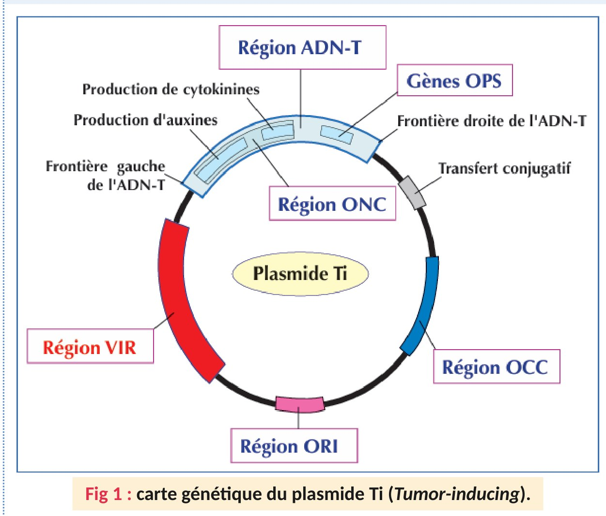

1. Rôle des régions du plasmide Ti
| Région du plasmide Ti | Rôle |
|---|---|
| Région Vir (virulence) | |
| ADN-T : gènes ONC (oncogènes) | |
| ADN-T : gènes OPS | |
| Région OCC | |
| ORI (origine de réplication) |
2. Étapes du transfert de l’ADN-T (écrire le numéro dans la case)
| N° | Étape |
|---|---|
| L’ADN-T est découpé et transféré dans la cellule végétale. | |
| Les gènes de l’ADN-T s’expriment : production d’auxines, de cytokinines et d’opines. | |
| La plante blessée libère des substances chimiques qui attirent la bactérie. | |
| L’ADN-T entre dans le noyau et s’intègre au génome de la cellule végétale. | |
| La bactérie se fixe sur la cellule végétale et active ses gènes Vir. |
3. Pourquoi la cellule végétale peut-elle exprimer des gènes bactériens ?
1. Vrai ou faux ? Justifier. (2 pts)
a) Le plasmide Ti se trouve dans le noyau de la bactérie. ☐ Vrai ☐ Faux
b) Tout le plasmide Ti est transféré dans la cellule végétale. ☐ Vrai ☐ Faux
2. Expliquer l’intérêt, pour la bactérie, du transfert des gènes OPS. (1 pt)
3. Des Agrobacterium cultivées à 37 °C sont inoculées à une plante blessée. Que se passe-t-il ? Justifier. (2 pts)
1. Vrai ou faux ? Justifier. (2 pts)
a) Le plasmide Ti se trouve dans le noyau de la bactérie. ☐ Vrai ☐ Faux
b) Tout le plasmide Ti est transféré dans la cellule végétale. ☐ Vrai ☐ Faux
2. Expliquer l’intérêt, pour la bactérie, du transfert des gènes OPS. (1 pt)
3. Des Agrobacterium cultivées à 37 °C sont inoculées à une plante blessée. Que se passe-t-il ? Justifier. (2 pts)
| Région | Rôle |
|---|---|
| Région Vir | Gènes responsables du transfert de l’ADN-T vers le génome des cellules végétales. |
| ADN-T : gènes ONC | Codent les enzymes de synthèse des auxines et des cytokinines → multiplication anarchique des cellules → tumeur. |
| ADN-T : gènes OPS | Codent l’opine synthétase → la cellule végétale produit des opines. |
| Région OCC | Dégradation (catabolisme) des opines par la bactérie, qui s’en nourrit. |
| ORI | Origine de réplication : permet au plasmide de se multiplier dans la bactérie. |
3 – 5 – 1 – 4 – 2 soit : 1) la plante blessée attire la bactérie → 2) fixation et activation des gènes Vir → 3) découpage et transfert de l’ADN-T → 4) intégration au génome dans le noyau → 5) expression des gènes (auxines, cytokinines, opines).
Parce que le code génétique est universel : la cellule végétale transcrit et traduit les gènes bactériens comme ses propres gènes.
1.a) Faux : la bactérie est un procaryote, elle n’a pas de noyau ; le plasmide est dans le cytoplasme. (1 pt)
1.b) Faux : seul un fragment du plasmide, l’ADN-T, est transféré dans la cellule végétale. (1 pt)
2. Les gènes OPS font produire des opines par la cellule végétale ; la bactérie les utilise comme source de nutriments (carbone, azote, énergie) grâce à ses gènes OCC. (1 pt)
3. Pas de tumeur (0,5 pt) : à 37 °C, les bactéries perdent le plasmide Ti (0,75 pt) ; sans plasmide Ti, il n’y a pas de transfert d’ADN-T, donc pas de gènes ONC exprimés dans la plante (0,75 pt).